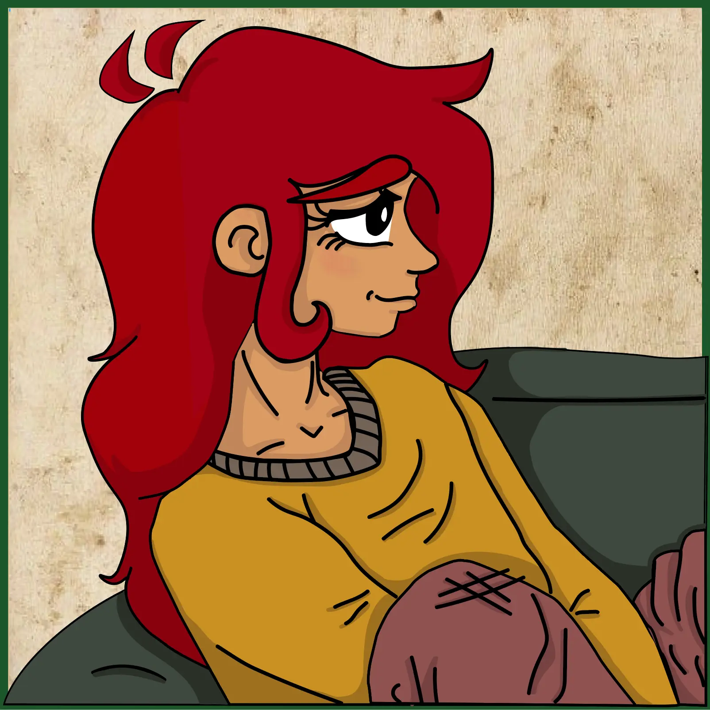
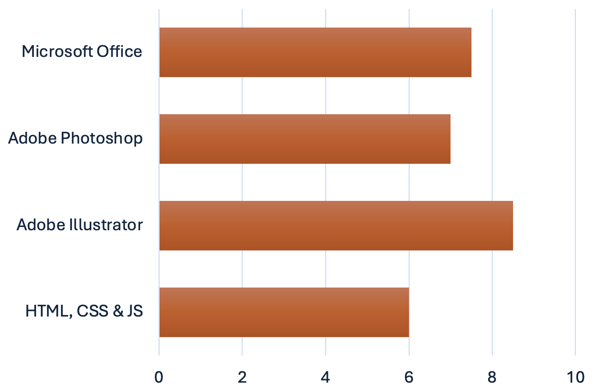
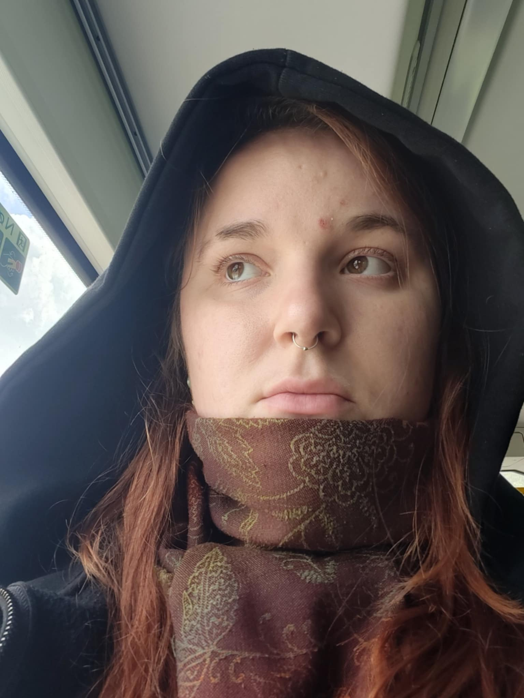

Portfolio
multimediedesign 2025

Projekter:
Om mig:
Lidt om mig
Jeg er studerende på multimediedesigneruddannelsen og har en særlig passion for illustration og det kreative tegnearbejde. Jeg elsker at forvandle idéer til visuelle udtryk – hvad enten det er digitale illustrationer, karakterdesign eller grafiske elementer til web og print. Gennem min uddannelse har jeg også fået erfaring med webdesign, UX/UI og visuel kommunikation, men det er i tegningen og illustrationens verden, jeg virkelig trives og finder inspiration.

Info
Navn: Rosa Cecilie Andersen Mail: rosa.cecilie@gmail.com Nummer: +45 30225567

Om mig:
Lidt om mig
Jeg er studerende på multimediedesigneruddannelsen og har en særlig passion for illustration og det kreative tegnearbejde. Jeg elsker at forvandle idéer til visuelle udtryk – hvad enten det er digitale illustrationer, karakterdesign eller grafiske elementer til web og print. Gennem min uddannelse har jeg også fået erfaring med webdesign, UX/UI og visuel kommunikation, men det er i tegningen og illustrationens verden, jeg virkelig trives og finder inspiration.
Info
Navn: Rosa Cecilie Andersen Mail: rosa.cecilie@gmail.com Nummer: +45 30225567